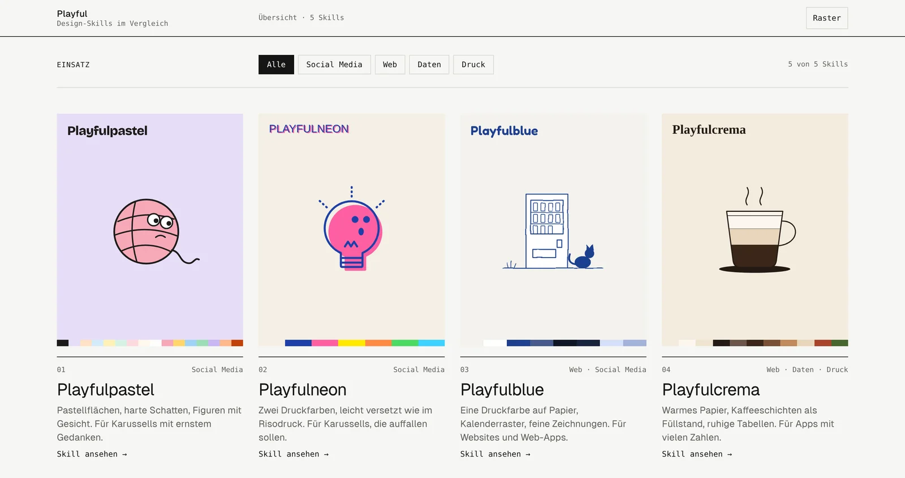
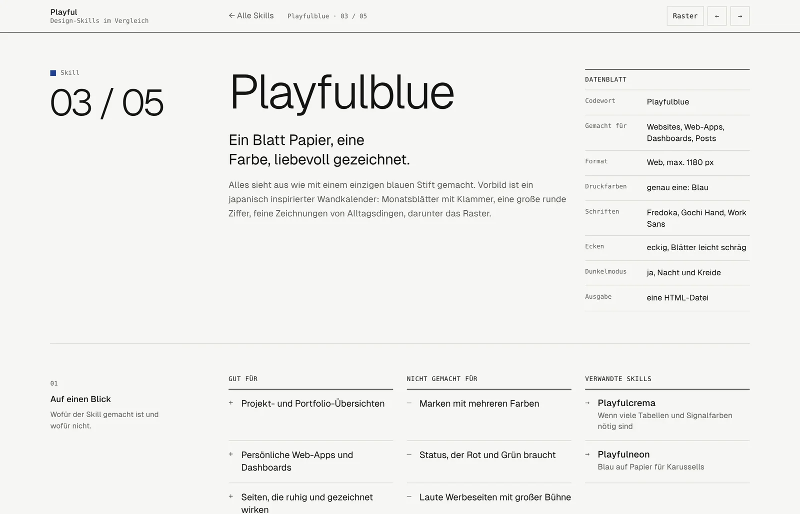

2026Laufend
Design-Skills
Meine visuellen Stile, so aufgeschrieben, dass sich die KI daran hält.

Das Problem
Bitte eine KI um etwas „in unserem Stil“, und du bekommst jedes Mal einen anderen.
Die Skills
Also beschreibe ich meine Stile als Skills für Claude: Farben, Schriften, wie Figuren gezeichnet werden und was erlaubt ist und was nicht. Ein Codewort, und ein Post oder eine Web-App sieht aus, als gehöre sie zur selben Familie.

Über meine eigenen Stile hinaus
Das funktioniert mit jeder Marke: einmal beschreiben, und die KI hält sich daran, egal, was man damit macht.